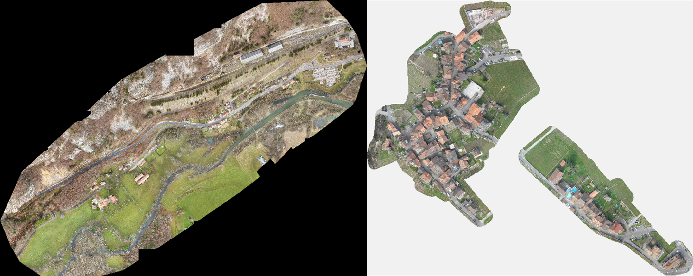
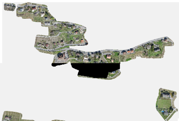
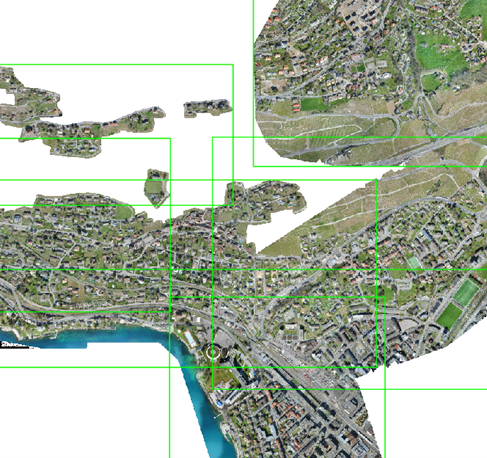

Orthophoto MAN
#FME
#Python
#ArcGIS Pro



Contexte
Lors des mises à niveau du cadastre vaudois, les bureaux mandatés devaient fournir une orthophoto sur leur périmètre de travail. Ce processus s'étendant sur plusieurs années, les données raster ont commencé à s'accumuler, rendant leur visualisation de plus en plus difficile. Le format de livraison n'étant pas défini, les données étaient extrêmement hétérogènes.
Objectifs
Mettre en place un processus automatisé permettant de traiter par lot les orthophotos existantes, puis d'incrémenter ponctuellement une mosaïque raster unifiée. Les orthophotos n'étant pas standardisées, le processus devait être entièrement dynamique afin de gérer :
- des résolutions variables
- des valeurs NoData non définies
- des nombres de bandes variables (3 ou 4)
- des pixels de fond hétérogènes. Chaque raster étant découpé sur un périmètre précis, les pixels hors emprise forment un fond dont la valeur varie d'un fichier à l'autre (ex. (0,0,0), (10,10,10), etc.). Le processus détecte automatiquement cette couleur de fond, reclassifie ces pixels en NoData pour les rendre transparents dans la mosaïque, sans altérer les pixels intérieurs représentant l'image réelle
- des chevauchements entre rasters, gérés par ordre de priorité
Rôle
Projet mené de manière autonome, de la conception du processus jusqu'à la mise à disposition en interne.